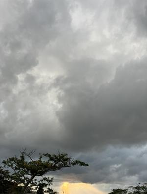

うるがいの話 ある日
最新: ヘイ・ジュード【うるがいの話 ある日】とは 一日だけのプログです
『うるがいの話』の最新一日だけのプログで、通信料が少なく経済的だ。カニの画像をクリックすると全ての日付が載る『うるがいの話』サイトを表示します
|
|
【うるがいの話】 うるがい(ｳﾙｶﾞｲ urugai)とは、『もずくがに』の名前でとても大きくなります。 |
|---|---|
|
|
【カミマヤーの話】 猫のことを方言でマヤーといいます。カミマヤー（kamimayaa）とは、神の猫のことです。 |
|
【たながぁの音楽】 たながぁ（ﾀﾅｶﾞｰ tanagaa）とは手長えびのことで、何種類かあり大きいのは車 エビぐらいになります。 |

|
【ぶながぁの話】 ぶながぁ(ﾌﾞﾅｶﾞｰ bunagaa)とは、赤い髪の毛、赤い身体、そして身長は１ｍ２０ｃｍ ぐらい、川の蟹を食べているの目撃された。場所は沖縄県国頭郡大宜味村のと ある村僕の隣近所に住んでいる爺さんから、聞いた話です。 |
|
|
【ギーマの話】 ギーマ(giima)とは、山原の里山に咲くスズランに似た、 花を付けます。実は食べられます、 気が付くと口の周りが紫になっています。 |
2024年01月26日 (金）ヘイ・ジュード
14:59

昨年末頃に、ＮＨＫの『ビートルズとロックの革命』を見て、『ヘイ・ジュー
ド 革命のシンボルになった名曲』ということが分かり、動画を作ろうと挑戦
した。ネットから、楽譜と楽譜データを探し、一応完成する。しかしだ、ドラ
ムがイマイチなのである。初めて、ネットからドラム譜を検索、なんと二つ見
つけ、これらを参考に肩が凝るが打ち込む。歌詞が、難しいので歌詞を邦訳し
た本を参考に、動画に字幕を入れ込もうと考えた。この前、ＣｈａｔＧＰＴの
本を図書館から検索し、唯一あったのが日経パソコン（２０２３．７．１０）
、その本をみていると無料で動画が作成できるウィンドウズ１１で動くＣｌｉ
ｐｃｈａｍｐ（無償版）の特集が載っていた。早速、使ってみた。なかなかで
ある。
『ビートルズ ヘイ・ジュード(Hey Jude) 三線』３分４６秒
ユーチューブ動画
１４時５４分 ビットコインの総資産 ￥１７、２１１（↑１１６）